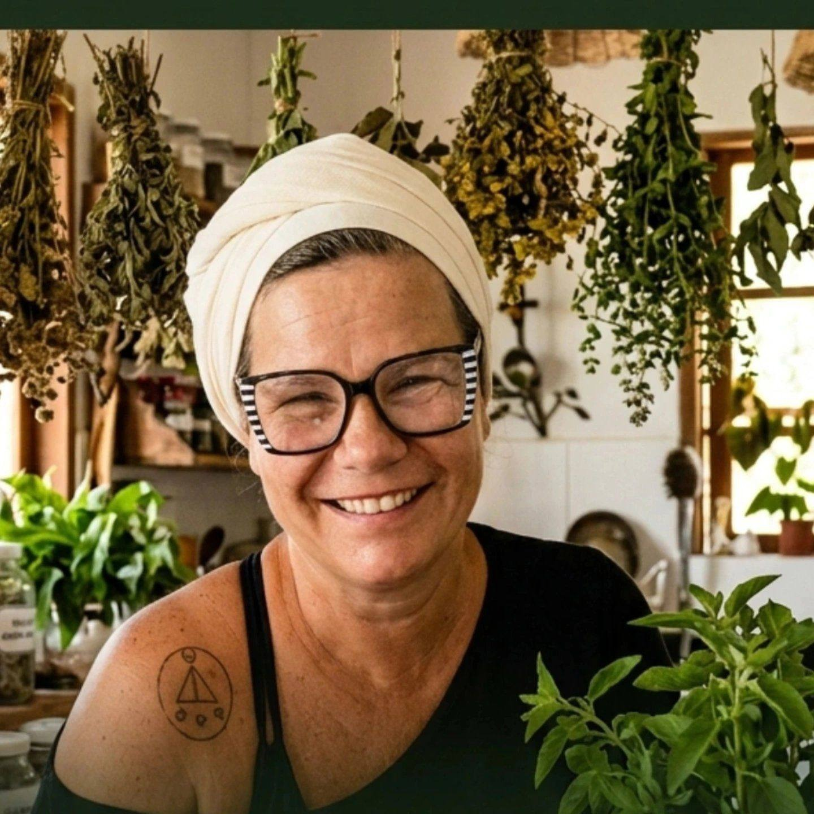

A erva é a mestra
Muita gente acha que magia precisa de coisa cara, ingrediente importado, livro difícil. Eu aprendi diferente. Aprendi com as mais velhas, no quintal, olhando a planta crescer e entendendo o que cada folha sabe fazer.
Nessa oficina eu te ensino a transformar as ervas em instrumentos de magia que ficam na sua casa e na sua vida. Você sai sabendo preparar, guardar e usar. Com fundamento e com respeito à planta.
É a primeira oficina aberta da Casa das Antigas, a escola de magia brasileira que nasceu no meu quintal em Barão Geraldo.
Cinco magias pra sua vida
Durante o dia a gente trabalha cinco frentes, cada uma com suas ervas e seus preparos.
Quatro preparos que você aprende a fazer
Como tirar a força da erva e guardar essa força por muito tempo, pronta pra usar quando precisar.
O encanto que vai junto com você, no corpo, no pulso, na roupa.
Erva seca, moída e consagrada, pra soprar, espalhar e firmar.
A fumaça que limpa a casa, afasta o que pesa e abre o caminho.
Como funciona
Quando: domingo, 6 de dezembro de 2026.
Horário: das 9h às 12h e das 14h às 17h, horário de Brasília. Tem pausa pro almoço.
Onde: online e ao vivo. Você participa de casa, pelo celular ou pelo computador.
Gravação: fica disponível por sete dias depois da oficina, pra você rever com calma.
Certificado: você recebe um certificado digital pra imprimir em casa.
Grupo: quem se inscreve entra no grupo da oficina no WhatsApp, onde chegam as orientações e o link da sala.
Um dengo pra quem vier ao vivo. Quem participar ao vivo ganha de presente a minha apostila de banhos de ervas.
Quem conduz

Sou Tatiana Rocha, a Yayá. Oraculista, erveira, sacerdotisa, escritora e cantora. Jogo oráculo há quarenta anos e ensino o saber das ervas desde 2013.
Escrevi os livros da Coleção Saberes da Terra e criei o Oráculo das Antigas e as Cartas do Jardim Sagrado. Tudo o que eu ensino vem do que eu vivo e pratico.